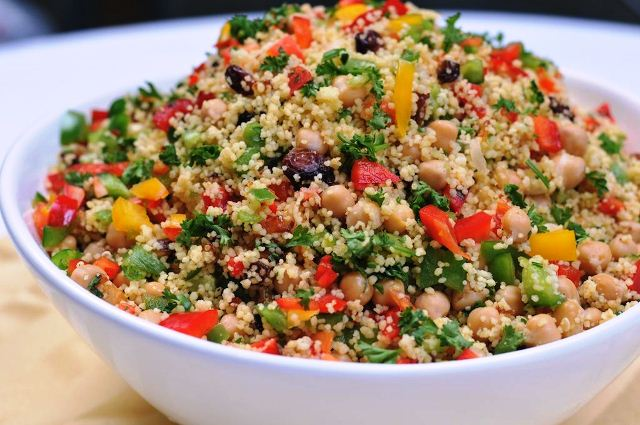
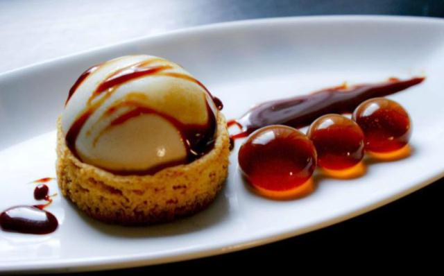

31 de Mayo de 2018
poner a hervir agua salada o caldo con una cucharadita de aceite en una olla grande, ya que crece bastante. Cuando rompe el hervor, quitar del fuego y echar dentro el cuscús, y revolver inmediantamente para que todo el cuscús absorba el líquido. Tapar la olla y dejar reposar por 5 minutos. Al destapar la olla, veréis que el cuscús ha quedado compacto, con los granos pegados. Agregar 1 cucharadita de mantequilla, y desgranar el cuscús con la ayuda de un tenedor, girando y moviendo hasta que los granitos queden sueltos.
Comenta
Vanett93: Muy buena receta, yo no sabía siquiera que existía ese tipo de comida, pero la preparé y me gusto mucho.

Sheila89_ST: Me gusta mucho la comida de medio Oriente, esta en especial me parece fácil de preparar y muy deliciosa, gracias "sazón de Lora" por tan buena receta. Saludos desde Colommbia.
Grandavi85_Col: Genial receta, pero una pregunta; Donde puedo conseguir el cus cus acá en Colombia? Saludos.
24 de Mayo de 2018
La gastronomía molecular es la aplicación de la ciencia a la práctica culinaria y más concretamente al fenómeno gastronómico. El término lo acuñaron el científico francés Hervé This y el físico húngaro Nicholas Kurti. Ambos investigadores trabajaron en la preparación científica de algunos alimentos: Nicholas Kurti dio una charla en el año 1969 en la Royal Institution denominada The physicist in the kitchen (El físico en la cocina).
Comenta
Crismen24_RM: No sabía para nada de que la ciencia y la cocina podían ir de la mano, gracias por el articulo, siempre es bueno aprender algo nuevo.
Adri35_CD: Donde se pueden probar ese tipo de platillos, el de la foto se ve muy delicioso. Saludos desde Ecuador.
Rose593_EC: En Ecuador esto esta area de la gastronomía esta tomando fuerza, más que nada por lo novedoso de trabajar con ingredientes poco usuales.